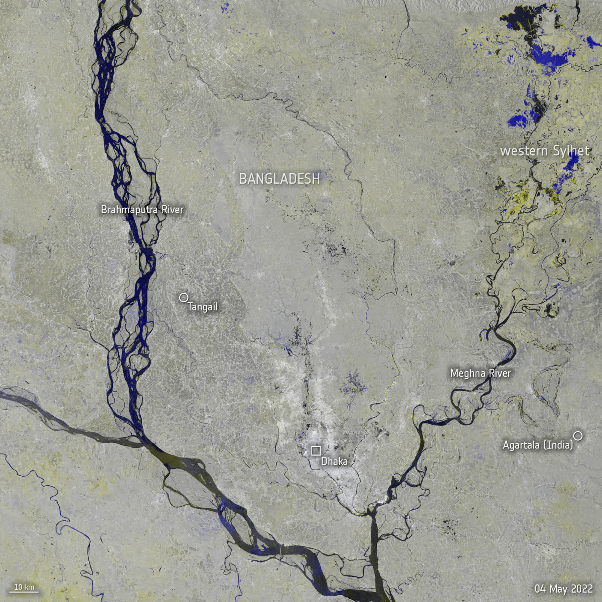
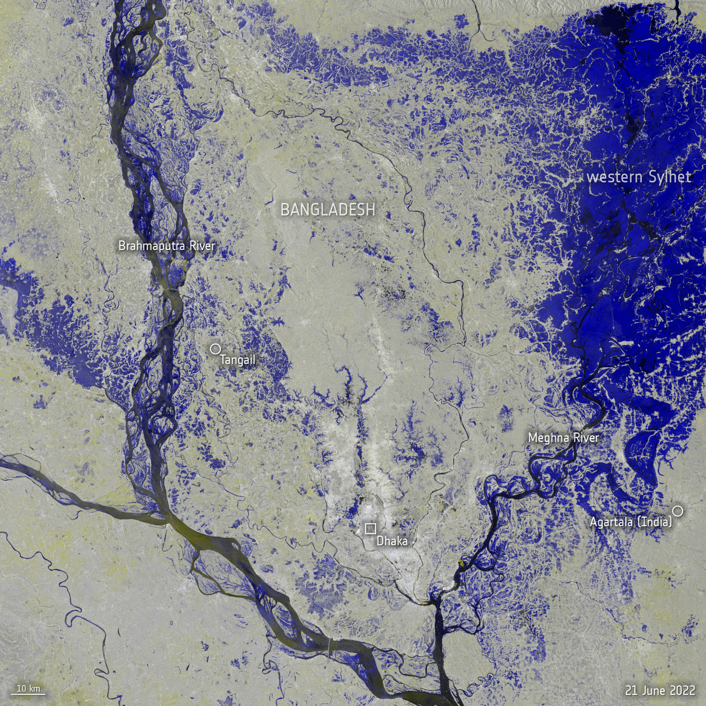
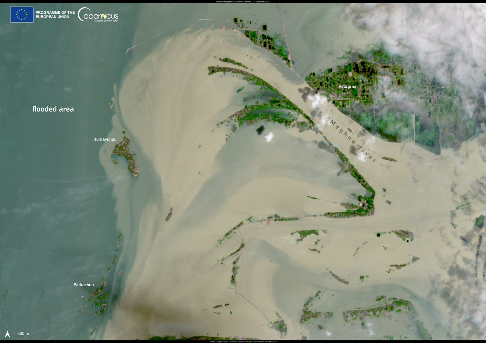

How much changed
Share of the study area covered by water
Before
--
After
--
Drag the handle to compare radar images from before and after.
Why it matters: add one line on who benefits, such as farmers or emergency teams.

Source: NASA-ISRO NISAR · Before: add date · After: add date · Satellite: NISAR (L-band) · add days apart
Share of the study area covered by water
What the brightness means.
These are radar images, not photos. The satellite sends radio waves down and records what bounces back.
Slide the handle to see the same place before and after. Dark patches that grow show where water spread.


Map source: NASA Global Imagery Browse Services (GIBS) & OpenStreetMap